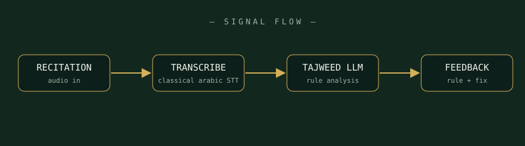

﷽
ai-powered recitation correction
An AI companion for learning Quranic recitation — it listens to your tilawat, detects tajweed mistakes, and explains the rule you missed, in plain language.

Record a verse directly in the app — audio is chunked and cleaned for analysis.
Speech-to-text tuned for classical Arabic, aligned against the expected ayah.
An LLM checks makhraj, madd, qalqalah and ghunnah against tajweed rules.
Feedback names the rule, shows where it broke, and suggests how to fix it.